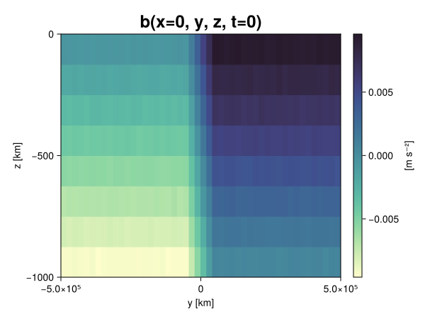
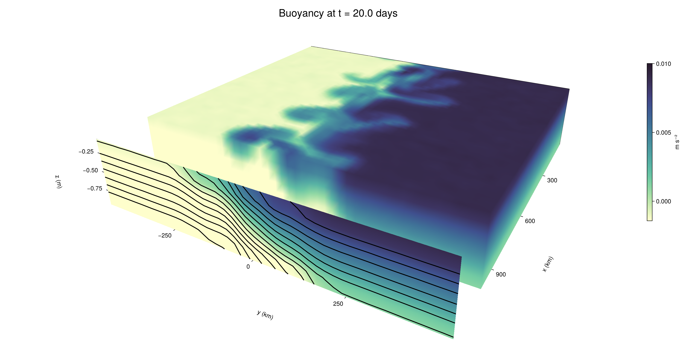

Baroclinic adjustment
In this example, we simulate the evolution and equilibration of a baroclinically unstable front.
Install dependencies
First let's make sure we have all required packages installed.
using Pkg
pkg"add Oceananigans, CairoMakie"using Oceananigans
using Oceananigans.UnitsGrid
We use a three-dimensional channel that is periodic in the x direction:
Lx = 1000kilometers # east-west extent [m]
Ly = 1000kilometers # north-south extent [m]
Lz = 1kilometers # depth [m]
grid = RectilinearGrid(size = (48, 48, 8),
x = (0, Lx),
y = (-Ly/2, Ly/2),
z = (-Lz, 0),
topology = (Periodic, Bounded, Bounded))48×48×8 RectilinearGrid{Float64, Periodic, Bounded, Bounded} on CPU with 3×3×3 halo
├── Periodic x ∈ [0.0, 1.0e6) regularly spaced with Δx=20833.3
├── Bounded y ∈ [-500000.0, 500000.0] regularly spaced with Δy=20833.3
└── Bounded z ∈ [-1000.0, 0.0] regularly spaced with Δz=125.0Model
We built a HydrostaticFreeSurfaceModel with an ImplicitFreeSurface solver. Regarding Coriolis, we use a beta-plane centered at 45° South.
model = HydrostaticFreeSurfaceModel(; grid,
coriolis = BetaPlane(latitude = -45),
buoyancy = BuoyancyTracer(),
tracers = :b,
momentum_advection = WENO(),
tracer_advection = WENO())HydrostaticFreeSurfaceModel{CPU, RectilinearGrid}(time = 0 seconds, iteration = 0)
├── grid: 48×48×8 RectilinearGrid{Float64, Periodic, Bounded, Bounded} on CPU with 3×3×3 halo
├── timestepper: QuasiAdamsBashforth2TimeStepper
├── tracers: b
├── closure: Nothing
├── buoyancy: BuoyancyTracer with ĝ = NegativeZDirection()
├── free surface: ImplicitFreeSurface with gravitational acceleration 9.80665 m s⁻²
│ └── solver: FFTImplicitFreeSurfaceSolver
├── advection scheme:
│ ├── momentum: WENO reconstruction order 5
│ └── b: WENO reconstruction order 5
└── coriolis: BetaPlane{Float64}We start our simulation from rest with a baroclinically unstable buoyancy distribution. We use ramp(y, Δy), defined below, to specify a front with width Δy and horizontal buoyancy gradient M². We impose the front on top of a vertical buoyancy gradient N² and a bit of noise.
"""
ramp(y, Δy)
Linear ramp from 0 to 1 between -Δy/2 and +Δy/2.
For example:
```
y < -Δy/2 => ramp = 0
-Δy/2 < y < -Δy/2 => ramp = y / Δy
y > Δy/2 => ramp = 1
```
"""
ramp(y, Δy) = min(max(0, y/Δy + 1/2), 1)
N² = 1e-5 # [s⁻²] buoyancy frequency / stratification
M² = 1e-7 # [s⁻²] horizontal buoyancy gradient
Δy = 100kilometers # width of the region of the front
Δb = Δy * M² # buoyancy jump associated with the front
ϵb = 1e-2 * Δb # noise amplitude
bᵢ(x, y, z) = N² * z + Δb * ramp(y, Δy) + ϵb * randn()
set!(model, b=bᵢ)Let's visualize the initial buoyancy distribution.
using CairoMakie
# Build coordinates with units of kilometers
x, y, z = 1e-3 .* nodes(grid, (Center(), Center(), Center()))
b = model.tracers.b
fig, ax, hm = heatmap(view(b, 1, :, :),
colormap = :deep,
axis = (xlabel = "y [km]",
ylabel = "z [km]",
title = "b(x=0, y, z, t=0)",
titlesize = 24))
Colorbar(fig[1, 2], hm, label = "[m s⁻²]")
fig
Simulation
Now let's build a Simulation.
simulation = Simulation(model, Δt=20minutes, stop_time=20days)Simulation of HydrostaticFreeSurfaceModel{CPU, RectilinearGrid}(time = 0 seconds, iteration = 0)
├── Next time step: 20 minutes
├── Elapsed wall time: 0 seconds
├── Wall time per iteration: NaN days
├── Stop time: 20 days
├── Stop iteration : Inf
├── Wall time limit: Inf
├── Callbacks: OrderedDict with 4 entries:
│ ├── stop_time_exceeded => Callback of stop_time_exceeded on IterationInterval(1)
│ ├── stop_iteration_exceeded => Callback of stop_iteration_exceeded on IterationInterval(1)
│ ├── wall_time_limit_exceeded => Callback of wall_time_limit_exceeded on IterationInterval(1)
│ └── nan_checker => Callback of NaNChecker for u on IterationInterval(100)
├── Output writers: OrderedDict with no entries
└── Diagnostics: OrderedDict with no entriesWe add a TimeStepWizard callback to adapt the simulation's time-step,
conjure_time_step_wizard!(simulation, IterationInterval(20), cfl=0.2, max_Δt=20minutes)Also, we add a callback to print a message about how the simulation is going,
using Printf
wall_clock = Ref(time_ns())
function print_progress(sim)
u, v, w = model.velocities
progress = 100 * (time(sim) / sim.stop_time)
elapsed = (time_ns() - wall_clock[]) / 1e9
@printf("[%05.2f%%] i: %d, t: %s, wall time: %s, max(u): (%6.3e, %6.3e, %6.3e) m/s, next Δt: %s\n",
progress, iteration(sim), prettytime(sim), prettytime(elapsed),
maximum(abs, u), maximum(abs, v), maximum(abs, w), prettytime(sim.Δt))
wall_clock[] = time_ns()
return nothing
end
add_callback!(simulation, print_progress, IterationInterval(100))Diagnostics/Output
Here, we save the buoyancy, $b$, at the edges of our domain as well as the zonal ($x$) average of buoyancy.
u, v, w = model.velocities
ζ = ∂x(v) - ∂y(u)
B = Average(b, dims=1)
U = Average(u, dims=1)
V = Average(v, dims=1)
filename = "baroclinic_adjustment"
save_fields_interval = 0.5day
slicers = (east = (grid.Nx, :, :),
north = (:, grid.Ny, :),
bottom = (:, :, 1),
top = (:, :, grid.Nz))
for side in keys(slicers)
indices = slicers[side]
simulation.output_writers[side] = JLD2OutputWriter(model, (; b, ζ);
filename = filename * "_$(side)_slice",
schedule = TimeInterval(save_fields_interval),
overwrite_existing = true,
indices)
end
simulation.output_writers[:zonal] = JLD2OutputWriter(model, (; b=B, u=U, v=V);
filename = filename * "_zonal_average",
schedule = TimeInterval(save_fields_interval),
overwrite_existing = true)JLD2OutputWriter scheduled on TimeInterval(12 hours):
├── filepath: ./baroclinic_adjustment_zonal_average.jld2
├── 3 outputs: (b, u, v)
├── array type: Array{Float64}
├── including: [:grid, :coriolis, :buoyancy, :closure]
├── file_splitting: NoFileSplitting
└── file size: 30.7 KiBNow we're ready to run.
@info "Running the simulation..."
run!(simulation)
@info "Simulation completed in " * prettytime(simulation.run_wall_time)[ Info: Running the simulation...
[ Info: Initializing simulation...
[00.00%] i: 0, t: 0 seconds, wall time: 25.963 seconds, max(u): (0.000e+00, 0.000e+00, 0.000e+00) m/s, next Δt: 20 minutes
[ Info: ... simulation initialization complete (28.100 seconds)
[ Info: Executing initial time step...
[ Info: ... initial time step complete (21.697 seconds).
[06.94%] i: 100, t: 1.389 days, wall time: 39.369 seconds, max(u): (1.354e-01, 1.171e-01, 1.770e-03) m/s, next Δt: 20 minutes
[13.89%] i: 200, t: 2.778 days, wall time: 1.255 seconds, max(u): (2.185e-01, 1.922e-01, 1.748e-03) m/s, next Δt: 20 minutes
[20.83%] i: 300, t: 4.167 days, wall time: 1.060 seconds, max(u): (2.830e-01, 2.290e-01, 1.762e-03) m/s, next Δt: 20 minutes
[27.78%] i: 400, t: 5.556 days, wall time: 1.013 seconds, max(u): (3.511e-01, 3.141e-01, 1.724e-03) m/s, next Δt: 20 minutes
[34.72%] i: 500, t: 6.944 days, wall time: 1.008 seconds, max(u): (4.681e-01, 3.881e-01, 1.736e-03) m/s, next Δt: 20 minutes
[41.67%] i: 600, t: 8.333 days, wall time: 1.108 seconds, max(u): (5.774e-01, 5.689e-01, 1.858e-03) m/s, next Δt: 20 minutes
[48.61%] i: 700, t: 9.722 days, wall time: 1.096 seconds, max(u): (7.403e-01, 8.496e-01, 2.842e-03) m/s, next Δt: 20 minutes
[55.56%] i: 800, t: 11.111 days, wall time: 1.134 seconds, max(u): (1.068e+00, 1.027e+00, 3.795e-03) m/s, next Δt: 20 minutes
[62.50%] i: 900, t: 12.500 days, wall time: 1.100 seconds, max(u): (1.291e+00, 1.224e+00, 5.221e-03) m/s, next Δt: 20 minutes
[69.44%] i: 1000, t: 13.889 days, wall time: 1.214 seconds, max(u): (1.384e+00, 1.056e+00, 4.885e-03) m/s, next Δt: 20 minutes
[76.39%] i: 1100, t: 15.278 days, wall time: 1.223 seconds, max(u): (1.255e+00, 1.096e+00, 3.584e-03) m/s, next Δt: 20 minutes
[83.33%] i: 1200, t: 16.667 days, wall time: 1.164 seconds, max(u): (1.156e+00, 1.279e+00, 3.392e-03) m/s, next Δt: 20 minutes
[90.28%] i: 1300, t: 18.056 days, wall time: 1.232 seconds, max(u): (1.456e+00, 1.273e+00, 2.811e-03) m/s, next Δt: 20 minutes
[97.22%] i: 1400, t: 19.444 days, wall time: 1.231 seconds, max(u): (1.512e+00, 1.263e+00, 3.821e-03) m/s, next Δt: 20 minutes
[ Info: Simulation is stopping after running for 1.165 minutes.
[ Info: Simulation time 20 days equals or exceeds stop time 20 days.
[ Info: Simulation completed in 1.166 minutes
Visualization
All that's left is to make a pretty movie. Actually, we make two visualizations here. First, we illustrate how to make a 3D visualization with Makie's Axis3 and Makie.surface. Then we make a movie in 2D. We use CairoMakie in this example, but note that using GLMakie is more convenient on a system with OpenGL, as figures will be displayed on the screen.
using CairoMakieThree-dimensional visualization
We load the saved buoyancy output on the top, north, and east surface as FieldTimeSerieses.
filename = "baroclinic_adjustment"
sides = keys(slicers)
slice_filenames = NamedTuple(side => filename * "_$(side)_slice.jld2" for side in sides)
b_timeserieses = (east = FieldTimeSeries(slice_filenames.east, "b"),
north = FieldTimeSeries(slice_filenames.north, "b"),
top = FieldTimeSeries(slice_filenames.top, "b"))
B_timeseries = FieldTimeSeries(filename * "_zonal_average.jld2", "b")
times = B_timeseries.times
grid = B_timeseries.grid48×48×8 RectilinearGrid{Float64, Periodic, Bounded, Bounded} on CPU with 3×3×3 halo
├── Periodic x ∈ [0.0, 1.0e6) regularly spaced with Δx=20833.3
├── Bounded y ∈ [-500000.0, 500000.0] regularly spaced with Δy=20833.3
└── Bounded z ∈ [-1000.0, 0.0] regularly spaced with Δz=125.0We build the coordinates. We rescale horizontal coordinates to kilometers.
xb, yb, zb = nodes(b_timeserieses.east)
xb = xb ./ 1e3 # convert m -> km
yb = yb ./ 1e3 # convert m -> km
Nx, Ny, Nz = size(grid)
x_xz = repeat(x, 1, Nz)
y_xz_north = y[end] * ones(Nx, Nz)
z_xz = repeat(reshape(z, 1, Nz), Nx, 1)
x_yz_east = x[end] * ones(Ny, Nz)
y_yz = repeat(y, 1, Nz)
z_yz = repeat(reshape(z, 1, Nz), grid.Ny, 1)
x_xy = x
y_xy = y
z_xy_top = z[end] * ones(grid.Nx, grid.Ny)Then we create a 3D axis. We use zonal_slice_displacement to control where the plot of the instantaneous zonal average flow is located.
fig = Figure(size = (1600, 800))
zonal_slice_displacement = 1.2
ax = Axis3(fig[2, 1],
aspect=(1, 1, 1/5),
xlabel = "x (km)",
ylabel = "y (km)",
zlabel = "z (m)",
xlabeloffset = 100,
ylabeloffset = 100,
zlabeloffset = 100,
limits = ((x[1], zonal_slice_displacement * x[end]), (y[1], y[end]), (z[1], z[end])),
elevation = 0.45,
azimuth = 6.8,
xspinesvisible = false,
zgridvisible = false,
protrusions = 40,
perspectiveness = 0.7)Axis3()We use data from the final savepoint for the 3D plot. Note that this plot can easily be animated by using Makie's Observable. To dive into Observables, check out Makie.jl's Documentation.
n = length(times)41Now let's make a 3D plot of the buoyancy and in front of it we'll use the zonally-averaged output to plot the instantaneous zonal-average of the buoyancy.
b_slices = (east = interior(b_timeserieses.east[n], 1, :, :),
north = interior(b_timeserieses.north[n], :, 1, :),
top = interior(b_timeserieses.top[n], :, :, 1))
# Zonally-averaged buoyancy
B = interior(B_timeseries[n], 1, :, :)
clims = 1.1 .* extrema(b_timeserieses.top[n][:])
kwargs = (colorrange=clims, colormap=:deep, shading=NoShading)
surface!(ax, x_yz_east, y_yz, z_yz; color = b_slices.east, kwargs...)
surface!(ax, x_xz, y_xz_north, z_xz; color = b_slices.north, kwargs...)
surface!(ax, x_xy, y_xy, z_xy_top; color = b_slices.top, kwargs...)
sf = surface!(ax, zonal_slice_displacement .* x_yz_east, y_yz, z_yz; color = B, kwargs...)
contour!(ax, y, z, B; transformation = (:yz, zonal_slice_displacement * x[end]),
levels = 15, linewidth = 2, color = :black)
Colorbar(fig[2, 2], sf, label = "m s⁻²", height = Relative(0.4), tellheight=false)
title = "Buoyancy at t = " * string(round(times[n] / day, digits=1)) * " days"
fig[1, 1:2] = Label(fig, title; fontsize = 24, tellwidth = false, padding = (0, 0, -120, 0))
rowgap!(fig.layout, 1, Relative(-0.2))
colgap!(fig.layout, 1, Relative(-0.1))
save("baroclinic_adjustment_3d.png", fig)
Two-dimensional movie
We make a 2D movie that shows buoyancy $b$ and vertical vorticity $ζ$ at the surface, as well as the zonally-averaged zonal and meridional velocities $U$ and $V$ in the $(y, z)$ plane. First we load the FieldTimeSeries and extract the additional coordinates we'll need for plotting
ζ_timeseries = FieldTimeSeries(slice_filenames.top, "ζ")
U_timeseries = FieldTimeSeries(filename * "_zonal_average.jld2", "u")
B_timeseries = FieldTimeSeries(filename * "_zonal_average.jld2", "b")
V_timeseries = FieldTimeSeries(filename * "_zonal_average.jld2", "v")
xζ, yζ, zζ = nodes(ζ_timeseries)
yv = ynodes(V_timeseries)
xζ = xζ ./ 1e3 # convert m -> km
yζ = yζ ./ 1e3 # convert m -> km
yv = yv ./ 1e3 # convert m -> km49-element Vector{Float64}:
-500.0
-479.1666666666667
-458.3333333333333
-437.5
-416.6666666666667
-395.8333333333333
-375.0
-354.1666666666667
-333.3333333333333
-312.5
-291.6666666666667
-270.8333333333333
-250.0
-229.16666666666666
-208.33333333333334
-187.5
-166.66666666666666
-145.83333333333334
-125.0
-104.16666666666667
-83.33333333333333
-62.5
-41.666666666666664
-20.833333333333332
0.0
20.833333333333332
41.666666666666664
62.5
83.33333333333333
104.16666666666667
125.0
145.83333333333334
166.66666666666666
187.5
208.33333333333334
229.16666666666666
250.0
270.8333333333333
291.6666666666667
312.5
333.3333333333333
354.1666666666667
375.0
395.8333333333333
416.6666666666667
437.5
458.3333333333333
479.1666666666667
500.0Next, we set up a plot with 4 panels. The top panels are large and square, while the bottom panels get a reduced aspect ratio through rowsize!.
set_theme!(Theme(fontsize=24))
fig = Figure(size=(1800, 1000))
axb = Axis(fig[1, 2], xlabel="x (km)", ylabel="y (km)", aspect=1)
axζ = Axis(fig[1, 3], xlabel="x (km)", ylabel="y (km)", aspect=1, yaxisposition=:right)
axu = Axis(fig[2, 2], xlabel="y (km)", ylabel="z (m)")
axv = Axis(fig[2, 3], xlabel="y (km)", ylabel="z (m)", yaxisposition=:right)
rowsize!(fig.layout, 2, Relative(0.3))To prepare a plot for animation, we index the timeseries with an Observable,
n = Observable(1)
b_top = @lift interior(b_timeserieses.top[$n], :, :, 1)
ζ_top = @lift interior(ζ_timeseries[$n], :, :, 1)
U = @lift interior(U_timeseries[$n], 1, :, :)
V = @lift interior(V_timeseries[$n], 1, :, :)
B = @lift interior(B_timeseries[$n], 1, :, :)Observable([-0.009349753350307008 -0.00812325360142672 -0.0068677886446691415 -0.005644910799958475 -0.004388275666947921 -0.0031168470790155374 -0.0018864222457981928 -0.0006004227458630769; -0.009389900158647246 -0.008135357164078863 -0.006867121390280469 -0.005628512005504983 -0.004358184879299851 -0.0031291501745200744 -0.0019060060120482333 -0.0005999892310592413; -0.009350815537076477 -0.008133844158758102 -0.00688554961145945 -0.005612646085246504 -0.0043798844058233165 -0.003149508300294431 -0.001872140675786394 -0.0006216339220274994; -0.009347269559868287 -0.008117222507584815 -0.0068852689066262775 -0.005609019275533071 -0.004374844224018816 -0.0031244037404435116 -0.001872655495385217 -0.0006456392727425212; -0.009398763365059038 -0.008124834098349507 -0.006856868817874606 -0.005625204820410508 -0.004390739143132395 -0.003118085384806938 -0.0018643883791522578 -0.0006335689302999353; -0.009373649768611813 -0.008128212833570264 -0.006860915083779655 -0.00561380303420609 -0.004371188945541315 -0.00312274112369058 -0.0018671796243074866 -0.0006435692358896455; -0.009361624397697789 -0.008119477280703887 -0.006891798595456877 -0.005628967715030364 -0.0043627887174687895 -0.003134813554865125 -0.0018834354512049381 -0.0006234868411250423; -0.00936378076841609 -0.008115177497854648 -0.006885067335523135 -0.005631931124534366 -0.004371087181863438 -0.003122229568408908 -0.0018854810503093568 -0.0006261647943590698; -0.009352384680312709 -0.008089047639772978 -0.006875865208601925 -0.005623547193148777 -0.004376150516076799 -0.003133234882555449 -0.0018587853437994834 -0.0006309756448075754; -0.009373534929588286 -0.00811626131264625 -0.006895747538710639 -0.005612104864042389 -0.004363282684643778 -0.0031431010357629266 -0.0018797035593884615 -0.0006213371390519732; -0.00939437407412762 -0.00812267693159955 -0.006865824507676713 -0.005620061517852506 -0.004361570921596401 -0.003144174000398943 -0.0018616019042240778 -0.0005950876614556964; -0.009391905520618563 -0.008122857319478448 -0.0068773998463309725 -0.005640194264872982 -0.004365229687256144 -0.0031231901240836232 -0.0018617851623453894 -0.000613146908987202; -0.00939114850636352 -0.008128080155649628 -0.0068683190148261025 -0.005637798727411536 -0.004366150332407181 -0.003125889051163147 -0.001885756968819063 -0.0006245740176305079; -0.009386916944077 -0.008111488423752538 -0.006882770238536874 -0.0056314439685385435 -0.004361179716195508 -0.003140533430595232 -0.0018754831763980017 -0.000609078047025618; -0.009377151261497055 -0.008137293929781658 -0.006855498864611652 -0.0056189521242450925 -0.004381283467986181 -0.0031330875564236096 -0.001881866031977822 -0.0006340525827407754; -0.009364194910355094 -0.008132265829578362 -0.006855646702235059 -0.005640097004746125 -0.004387609069435326 -0.0031465786477596347 -0.0018467165785325454 -0.0005927782848856364; -0.00935655326673915 -0.008146015416033853 -0.0068538022208820375 -0.005651007961402047 -0.004376749678014886 -0.003146035848758984 -0.001864269490130074 -0.0006435643465244274; -0.009369110858851363 -0.00811328019282684 -0.0068912770661464055 -0.005630754349482898 -0.004385342668524636 -0.0031351428044098066 -0.0018951709954814384 -0.0006329411524143603; -0.009385879389323446 -0.008135870831779224 -0.006861209643998054 -0.005644738214446746 -0.004344946710270821 -0.0031601128338820026 -0.0018791530294241367 -0.000620486327609998; -0.009368461017911977 -0.008122602170478643 -0.006853013758145597 -0.005622944571384676 -0.004385812520925383 -0.0031315439246931173 -0.001877413675238757 -0.0005983386326161545; -0.009358194959286982 -0.008120580824623426 -0.006869709637691985 -0.0056114078248156694 -0.004373538639067707 -0.0031116101070220686 -0.0018691784526249048 -0.0006154477523673827; -0.00939659966017619 -0.0081246888474417 -0.006861755238105619 -0.005594869631874762 -0.004380467622152878 -0.0031098625703922258 -0.0018666207438634969 -0.0006204316138788348; -0.007524470092216361 -0.00627159379408549 -0.005017179913778593 -0.0037705462370468588 -0.002506469181922114 -0.001278062769376684 1.593150465313109e-5 0.0012423879679618203; -0.005428648587763323 -0.004191345804960227 -0.0029034969423152868 -0.001658602375846725 -0.00040942512113183405 0.000812394614912358 0.0020872407179981355 0.003326011175435408; -0.0033414866316434865 -0.0021030936749619196 -0.0008294683017501183 0.00041240766232540036 0.0016273634554437443 0.0029521816966114737 0.0041593554101009254 0.0054346593670373785; -0.0012568937410168209 1.2815073660007766e-5 0.0012307204542795177 0.002506566870158056 0.003764984007705115 0.005003939932574014 0.0062600943568819345 0.007499279043541463; 0.0006174461337889117 0.0018743876336927833 0.003120755944667418 0.004389890533272267 0.0056153751658872585 0.006891244138427756 0.00812109847621864 0.009383847846224763; 0.0006542589163306679 0.0018779771753480532 0.003118490824250454 0.004367357019338624 0.005607702134844281 0.006876226608614436 0.008130107386714628 0.009384797131749861; 0.000613888038124796 0.0018885812275255761 0.003124675863578754 0.004353954266206812 0.005617110413376505 0.006881949792328801 0.008086114130839055 0.009393044813569793; 0.0006208885100247524 0.0018800782731101609 0.0031131155143409683 0.004366295407750231 0.005628507607470913 0.006897589897583004 0.008116378358491097 0.009373021461310997; 0.0005910768448244831 0.001877718217603426 0.0031263945380862854 0.0043782938920466806 0.0056295046880002544 0.006914959247688464 0.008112518036958009 0.009410893259547685; 0.000620156122668945 0.0018521296384195328 0.0031352366427817475 0.004361635185742591 0.005629354747462948 0.006881296044338676 0.008132038420017583 0.009369998176358198; 0.0006527961945038391 0.0018870938187702877 0.0031247309339928575 0.004354984115591852 0.005619970655852496 0.006881539577613292 0.008107255197105007 0.009384250935035714; 0.0006262589700819421 0.0018796885778730673 0.0031233191331379966 0.00439961627513015 0.00563692444356047 0.0068777897444272625 0.00813755060124432 0.009389927072673034; 0.0006140060606766897 0.0018818956577071222 0.0031187080330461335 0.004370998825437253 0.005627848299564644 0.0068752145699356336 0.00809542764658511 0.009392774583834732; 0.0006249648045113382 0.0018585908446813332 0.003123671298616277 0.004365793361480126 0.0056340471535520735 0.00686624653306447 0.008091593920585104 0.009349574304773641; 0.000603073924566832 0.001891055292559735 0.0031417300211457207 0.0043740678588558846 0.005626652473848204 0.006901877215663779 0.00811900733694061 0.009400386482681872; 0.0006230014384270608 0.0018844623984616941 0.003124708456901044 0.004350598088995101 0.005604681171859874 0.006873748713221777 0.008143688302772288 0.00936401164284476; 0.0006373912958261985 0.0018592937349819275 0.0031057686976740943 0.004371415656152312 0.005625013428643434 0.006825183726825057 0.00814841956028904 0.009395814430044232; 0.0006283050881776175 0.0018757955163847817 0.003120365362848319 0.0043693354078715085 0.005619124057537364 0.006885724968359215 0.008127667668576635 0.009375057200578692; 0.0006049321614113949 0.001889085408094237 0.0031095499383486194 0.004394590011054248 0.005643466636134388 0.00686237087941964 0.008154456170973231 0.009355666790750854; 0.0006192146360157645 0.0018888191081764324 0.003095246947362145 0.004369080049929166 0.005620187823713935 0.006860750475498755 0.008115653130011632 0.009352879774530793; 0.0006207342719731701 0.0018729892066809122 0.0031088732369686785 0.0043929710921825444 0.005631753737625675 0.006849527762946173 0.00814126132828199 0.00935681447639177; 0.000610145818932605 0.0018717451201170348 0.003127309313737238 0.004382588432593045 0.005590317962180104 0.00687095950238945 0.008131563945395132 0.009370213816529069; 0.00062557767441485 0.0018412281053602373 0.003119635744548727 0.004380151762245724 0.0056157377882839685 0.006883492402067942 0.008122580487486484 0.00938949142263512; 0.0006178898206192084 0.0018954750710323514 0.003123683241424917 0.004376443342771365 0.0056217447543586395 0.006871000962258772 0.008112285636079299 0.009391944253536424; 0.000632154380261831 0.00185385646668412 0.003132445407264808 0.004385718986245431 0.005618231718340215 0.006878608811438924 0.008131088018793487 0.009378516605849981; 0.0006405204252095342 0.0018865975620080144 0.003126673376895237 0.004362226796418569 0.00561391810370557 0.0068837565195928735 0.008145568269355518 0.009375160962187117])
and then build our plot:
hm = heatmap!(axb, xb, yb, b_top, colorrange=(0, Δb), colormap=:thermal)
Colorbar(fig[1, 1], hm, flipaxis=false, label="Surface b(x, y) (m s⁻²)")
hm = heatmap!(axζ, xζ, yζ, ζ_top, colorrange=(-5e-5, 5e-5), colormap=:balance)
Colorbar(fig[1, 4], hm, label="Surface ζ(x, y) (s⁻¹)")
hm = heatmap!(axu, yb, zb, U; colorrange=(-5e-1, 5e-1), colormap=:balance)
Colorbar(fig[2, 1], hm, flipaxis=false, label="Zonally-averaged U(y, z) (m s⁻¹)")
contour!(axu, yb, zb, B; levels=15, color=:black)
hm = heatmap!(axv, yv, zb, V; colorrange=(-1e-1, 1e-1), colormap=:balance)
Colorbar(fig[2, 4], hm, label="Zonally-averaged V(y, z) (m s⁻¹)")
contour!(axv, yb, zb, B; levels=15, color=:black)Finally, we're ready to record the movie.
frames = 1:length(times)
record(fig, filename * ".mp4", frames, framerate=8) do i
n[] = i
endThis page was generated using Literate.jl.